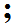

Using Colons and Semi-Colons
Using Colons and Semi-Colons
Introduction
The most common punctuation marks in English are probably the period and the comma. However, good writing in English will usually make use of the colon and the semi-colon. Although these look similar and have similar names, their functions are completely different. This page will explain the functions of the colon and the semi-colon.
1. The colon
A colon consists of two dots, one above the other:
The colon is often used to introduce a list of items. For example:
You will need to bring three things to the party: some food, something to drink, and a small gift for the hostess.
This sentence contains a list of three items. The first part of the sentence tells you that there will be three things; then the colon tells you "here are the three things". You can also use a colon to introduce an explanation or a definition of something. For instance:
I'll tell you what I'm going to do: I'm going to quit!
"Elephant (noun): a large grey mammal found in Africa and India."
2. The semi-colon
A semi-colon consists of a comma with a dot above it:

The semi-colon is often used to join together two independent clauses — in other words, it joins two clauses that could be sentences. For example:
Mary drives a Mercedes; Joanne drives a Chevrolet.
These two clauses could be separate sentences: "Mary drives a Mercedes. Joanne drives a Chevrolet." However, when we use a semi-colon, we are usually suggesting that there is a relationship between the sentences, but we are not making that relationship clear. Usually, you can tell from the context what the relationship is. In the example above, the relationship is probably CONTRAST; we could also use "but" to make this clear: "Mary drives a Mercedes, but Joanne drives a Chevrolet." When we use a semi-colon, it is often because we want to make the reader think about the relationship for herself. This is useful in many situations, such as when writing cautiously, ironically, or humorously.
One more very common use of the semi-colon is to join two clauses using a transition such as however, therefore, or on the other hand. Here are some examples:
| Transition | Example |
|---|---|
| in addition | She works all day in a store; in addition, she takes classes in the evenings. |
| however | John is Canadian; however, he lives in the United States. |
| otherwise | You should get your brakes fixed; otherwise, you might have an accident. |
| therefore | Hundreds of people cross the border from the US to Canada every day; therefore, it is not possible to search all of them carefully. |
When you are sure that you understand the lesson, you can continue with the exercise.